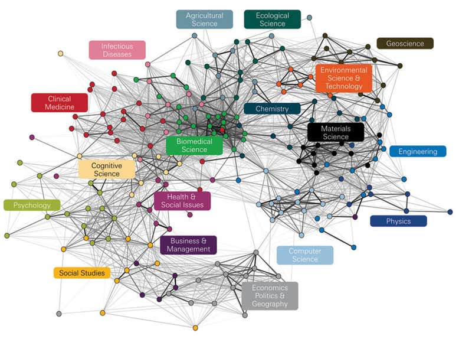

Team-Based Interdisciplinary Research
2021-08-23
Preface

Science is a complex business, as this map of journal cross-citations shows. Each node represents a subdiscipline and the lines represent the strength of similarity between the nodes. Image: Rafols, Ismael, Alan L. Porter, and Loet Leydesdorff. “Science overlay maps: A new tool for research policy and library management.” Journal of the American Society for information Science and Technology 61.9 (2010): 1871-1887.
(Rafols, Porter, and Leydesdorff 2010)
0.1 Goals of this Course
The purpose of this course is to prepare you for a future career that involves collaborative or team-based approaches to scientific research and problem solving. Through this course you will gain expertise in team-science concepts and approaches, including:
- team building,
- team diversity and social sensitivity,
- effective individual and team communication,
- collaboration tools and strategies,
- constructive/destructive group behaviors,
- conflict resolution,
- individual and team time/project management,
- creating effective team policies, procedures, and expectations, including authorship and data sharing policies,
- assessing team functioning,
- collaborative manuscript and proposal writing, and
collaborative presentations.
As teams you will employ these team-science skills to develop an interdisciplinary research proposal, to conduct preliminary research that aligns with the proposed project, and to develop and deliver an oral presentation of their proposed research and preliminary results. Towards developing a research proposal and conducting preliminary analyses, students will work together to develop the team’s rules of conduct and a project plan or roadmap. The team will work together to review relevant literature, to initiate preliminary analyses, coding, or modeling, to identify individual and team-oriented tasks, and to set milestones. The course will culminate with submission of a fully developed research proposal and team presentations of their proposed research project, preliminary results, and potential future directions.
0.2 Student Learning Outcomes
Upon completion of this course, you as students (and student teams) will have:
- Learned effective team-science skills and actively applied these skills to a collaborative project.
- Gained experience in individual and team project management.
- Acquired skills in developing and implementing team policies, procedures, and expectations.
- Assembled into teams to collaborate on a research proposal and preliminary analysis.
- Identified a research question/problem that all members of the team can participate in.
- Identified appropriate methods and approaches to tackle the proposed research project.
- Gained experience writing a concise and compelling research proposal as a team.
- Delivered a collaborative presentation on their research ideas and results.
0.3 Acknowledgements
These resources are under active development to offer INF559, a graduate course in the School of Informatics Computing and Cyber Systems at Northern Arizona University in Fall 2020, with funding and leadership from the National Science Foundation funded National Research Traineeship “T3” option in Ecological and Environmental Informatics within a PhD program in Informatics and Computing (NRT-HDR #1829075, PI’s Ogle, Barber, Richardson, Ruddell, and Sankey).
A number of open resources are linked within these materials with credit given to key collaborators. These currently include:
- Stephanie Hampton, Director of NSF’s Division of Environmental Biology
- Cassie Petit, NAU University Leadership Program and Assistant Director of Operations for CEIAS
- Jennifer Long, Program Director, Masters of Conservation and Restoration Science Education & Outreach Coordinator at UC-Irvine
- Emily Graham, Research Scientist at the Pacific Northwest National Laboratory
- Kendra Cheruvelil, Interim Dean and Professor, Department of Fisheries and Wildlife & Lyman Briggs College, Michigan State University
- Jill Baron, Co-Director of the USGS John Wesley Powell Center for Analysis and Synthesis
- Amber Budden, Director of Learning and Outreach at National Center for Ecological Analysis and Synthesis (NCEAS)
- Julia Chacon Labella, Post-doc at the University of Arizona
References and Readings
Rafols, Ismael, Alan L Porter, and Loet Leydesdorff. 2010. “Science Overlay Maps: A New Tool for Research Policy and Library Management.” Journal of the American Society for Information Science and Technology 61 (9). Wiley Online Library: 1871–87.